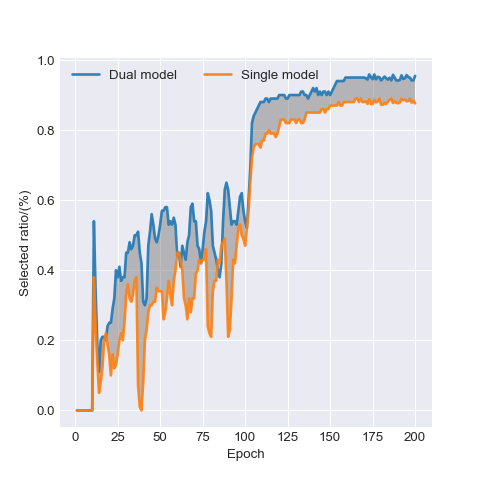
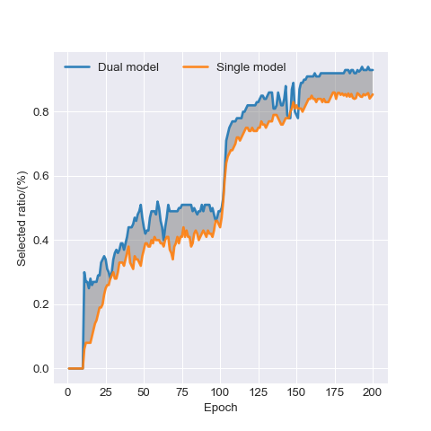

1
Historical Prediction Selection
A memory bank stores recent softmax outputs. Labels are selected only when predictions stay inside the candidate set, remain stable across epochs, and exceed a confidence threshold.
CroSel tackles label ambiguity in partial-label learning by selecting confident pseudo labels from historical predictions and training two networks to cross-correct each other. A co-mix consistency term further prevents sample waste and stabilizes training.
In partial-label learning, each training example comes with a candidate label set rather than a single clean annotation. The core challenge is to identify the true label accurately enough to turn ambiguous supervision into reliable training signals.
The method is built around stable pseudo-label identification, error correction across two models, and regularized learning on all examples instead of only the selected subset.
A memory bank stores recent softmax outputs. Labels are selected only when predictions stay inside the candidate set, remain stable across epochs, and exceed a confidence threshold.
Two identical models select labels for each other instead of trusting their own selections. This cross-supervised setup reduces error accumulation and improves pseudo-label quality.
Weak and strong augmentations generate soft pseudo targets, which are further mixed with MixUp. This keeps all examples trainable and reduces waste from unselected samples.
CroSel improves over previous methods on nearly all reported settings and is especially strong on CIFAR-100, where the gap to the best baseline reaches +1.68 points at q = 0.10.
At q = 0.10, CroSel reaches 84.07% vs. 82.39% from the strongest baseline.
Selection accuracy remains extremely high even when the candidate set noise grows to q = 0.5.
CroSel stays ahead under the more realistic CIFAR-100 superclass-constrained candidate setup.
On CIFAR-type datasets, both selected quantity and selected label precision stay above 90%.
Comparison against the strongest non-CroSel result in each setting, distilled from the paper.
| Dataset | q | CroSel | Best Baseline | Delta |
|---|---|---|---|---|
| CIFAR-10 | 0.10 | 97.31% | 97.41% (CRDPLL) | -0.10 |
| CIFAR-10 | 0.30 | 97.50% | 97.38% (CRDPLL) | +0.12 |
| CIFAR-10 | 0.50 | 97.34% | 96.76% (CRDPLL) | +0.58 |
| SVHN | 0.10 | 97.71% | 97.63% (CRDPLL) | +0.08 |
| SVHN | 0.30 | 97.96% | 97.65% (CRDPLL) | +0.31 |
| SVHN | 0.50 | 97.86% | 97.70% (CRDPLL) | +0.16 |
| CIFAR-100 | 0.01 | 84.24% | 83.03% (PoP) | +1.21 |
| CIFAR-100 | 0.05 | 83.92% | 82.79% (PoP) | +1.13 |
| CIFAR-100 | 0.10 | 84.07% | 82.39% (PoP) | +1.68 |

The dual-model cross-selection setup consistently selects more examples than a single-model version while preserving high precision.

The selection advantage remains visible on the harder CIFAR-100 setting, supporting the design choice of cross correction between two networks.
If CroSel is useful in your work, please cite the CVPR 2024 paper. The entry below matches the official CVF Open Access record.
@InProceedings{Tian_2024_CVPR,
author = {Tian, Shiyu and Wei, Hongxin and Wang, Yiqun and Feng, Lei},
title = {CroSel: Cross Selection of Confident Pseudo Labels for Partial-Label Learning},
booktitle = {Proceedings of the IEEE/CVF Conference on Computer Vision and Pattern Recognition (CVPR)},
month = {June},
year = {2024},
pages = {19479-19488}
}